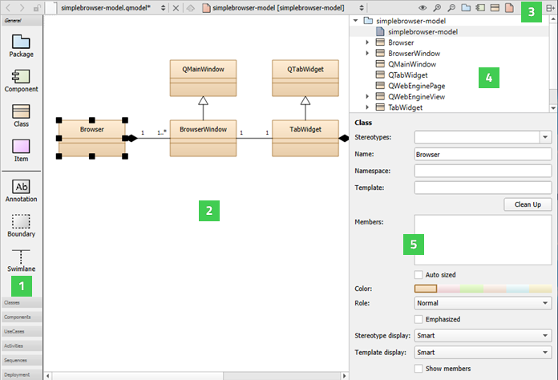
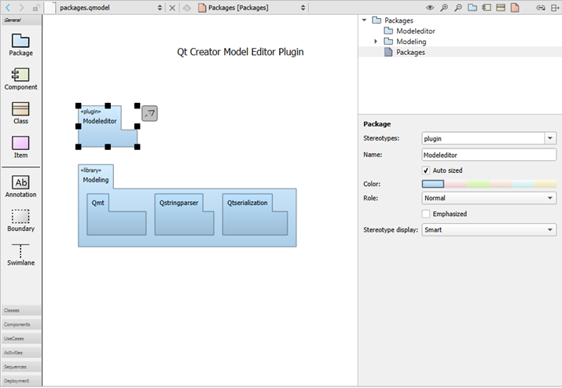
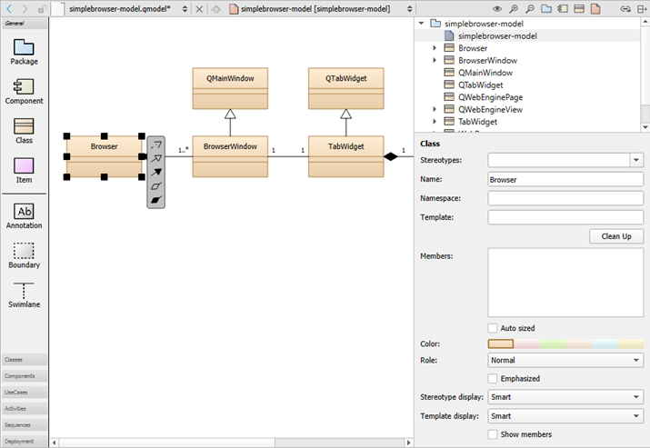

Modeling
You can use the model editor to create Universal Modeling Language (UML) style models with structured and behavioral diagrams that provide different views of your system. However, the editor uses a variant of UML and only a subset of properties are provided for specifying the appearance of model elements.
Structural diagrams represent the static aspect of the system and are therefore stable, whereas behavioral diagrams have both static and dynamic aspects.
You can create the following types of structural diagrams:
- Package diagrams, which consist of packages and their relationships, and visualize how the system is packaged.
- Class diagrams, which consists of classes, dependencies, inheritance, associations, aggregation, and composition, and provide an object-oriented view of a system.
- Component diagrams, which represent a set of components and their relationships, and provide an implementation view of a system.
- Deployment diagrams, which represent a set of software and hardware components and their relationships, and visualize the deployment of a system.
You can create the following types of behavioral diagrams:
- Use case diagrams, which consists of actors, use cases, and their relationships, and represent a particular functionality of a system.
- Activity diagrams, which visualize the flow from one activity to another.
- Sequence diagrams, which consist of instances and specify where the instances are activated and destroyed and where their lifeline ends.
Using the Model Editor
You can create models that contain several different structural or behavioral diagrams. You can add elements to the diagrams and specify properties for them. You can either use standard model elements or add your own elements with custom icons.

You can add model elements to diagrams in the following ways:
- Drag and drop model elements from the element tool bar (1) to the editor (2).
- Select tool bar buttons (3) to add elements to the element tree (4).
- Drag elements from the element tree to the editor to add them and all their relations to the diagram.
- Drag and drop source files from the sidebar views to the editor to add C++ classes or components to diagrams.
You can group elements by surrounding them with a boundary. When you move the boundary, all elements within it are moved together. Similary, drag a swimlane to the diagram. When you move the swimlane, all elements right to the swimlane (for vertical swimlanes) or below it (for horizontal swimlanes) will be moved together. A vertical swimlane is created when you drop the swimlane icon on the top border of the diagram and a horizontal swimlane is created when you drop the icon near the left border.
Classes or other objects that you lay on packages are moved with the packages. You can move individual elements and modify their properties (5) by selecting them. You can also use multiselection to group elements temporarily.
To align elements in the editor, select several elements and right-click to open a context menu. Select actions in the Align Objects menu to align elements horizontally or vertically or to adjust their width and height.
Drag the mouse over elements to select them and apply actions such as changing their stereotype or color. A stereotype is a classifier for elements, such as entity, control, interface, or boundary. An entity is usually a class that is used to store data. For some stereotypes, a custom icon is defined. You can assign several comma-separated stereotypes to one element.
To add related elements to a diagram, select an element in the editor, and then select Add Related Elements in the context menu.
By default, when you select an element in a diagram, it is highlighted also in the Structure view. To change this behavior so that selecting an element in the Structure makes it highlighted also in the diagram, click and hold the  button, and then select Synchronize Diagram with Structure. To keep the selections in the diagram and the Structure view synchronized, select Keep Synchronized.
button, and then select Synchronize Diagram with Structure. To keep the selections in the diagram and the Structure view synchronized, select Keep Synchronized.
To zoom into diagrams, select the Zoom In toolbar button, press Ctrl++, or press Ctrl and roll the mouse wheel up. To zoom out of diagrams, select Zoom Out, press Ctrl+-, or press Ctrl and roll the mouse wheel down. To reset the diagram size to 100%, select Reset Zoom or press Ctrl+0.
To print diagrams, press Ctrl+C when no elements are selected in the editor to copy all elements to the clipboard by using 300 dpi. Then paste the diagram to an application that can print images.
If you copy a selection of elements in the editor, only those elements and their relations will be copied to the clipboard as an image.
To save diagrams as images, select File > Export Diagram. To save only the selected parts of a diagram, select Export Selected Elements.
Creating Models
You can use wizards to create models and scratch models. A scratch model can be used to quickly put a temporary diagram together. The wizard creates the model file in a temporary folder without any input from you. Therefore, you can assign a keyboard shortcut to the wizard and use it to create and open models with empty diagrams.
To create models:
- Select File > New File or Project > Modeling > Model > or Scratch Model > Choose to create a model or a scratch model.
- Drag and drop model elements to the editor and select them to specify properties for them:
- In the Stereotypes field, enter the stereotype to apply to the model element or select a predefined stereotype from the list.
- In the Name field, give a name to the model element.
- Select the Auto sized check box to reset the element to its default size after you have changed the element size by dragging its borders.
- In the Color field, select the color of the model element.
- In the Role field, select a role to make the model element color lighter, darker, or softer. You can also remove color and draw the element outline or flatten the element by removing gradients.
- Select the Emphasized check box to draw the model element with a thicker line.
- In the Stereotype display field, select:
- Smart to display the stereotype as a Label, a Decoration, or an Icon, depending on the properties of the element. For example, if a class has the stereotype interface, it is displayed as an icon until it becomes displayed members, after which it is displayed as a decoration.
- None to suppress the displaying of the stereotype.
- Label to display the stereotype as a line of text using the standard form above the element name even if the stereotype defines a custom icon.
- Decoration to show the standard form of the element with the stereotype as a small icon placed top right if the stereotype defines a custom icon.
- Icon to display the element using the custom icon.
- To create a relation between two elements, select the arrow icon next to an element and drag it to the end point of the relation.
- Select the relation to specify settings for it, according to its type: inheritance, association, or dependency. You can specify the following settings for dependency relations, which are available for all element types:
- In the Stereotypes field, select the stereotype to apply to the relation.
- In the Name field, give a name to the relation.
- In the Direction field, you can change the direction of the connection or make it bidirectional.
- To move the end of a relation to a different element, grab the end point and drop it over another element that accepts relations of that type. For example, only classes accept inheritances and associations.
- To create sampling points that divide a relation into two connected lines, select a relation and press Shift and click on the relation line.
If possible, the end point of a relation is moved automatically to draw the line to the next sampling point either vertically or horizontally.
- To remove a sampling point, press Ctrl and click the sampling point.
- To group elements, drag and drop a Boundary element to the editor and resize it to enclose the elements in the group.
Creating Package Diagrams
You can add nested package elements to a package diagram. The depth of the elements in the diagram corresponds to the depth of the structured model. Elements stacked on other elements of the same type are automatically drawn in a darker shade of the selected color.

Right-click a package to open a context menu, where you can select Create Diagram to create a new package diagram within the model. You can drag and drop items from the element tree to the diagram.
To update the include dependencies of the package, select Update Include Dependencies.
Creating Class Diagrams

To create class diagrams:
- To add C++ classes to class diagrams, drag and drop files from Projects to the editor, and select Add Class.
- In addition to the common element properties, you can specify the following properties:
- In the Template field, specify the template to use.
- In the Template display field, select the display format for the template:
- Smart displays the template as Box or Angle brackets, depending on the class properties.
- Box displays the template in a small box with a dotted border in the top right corner of the class icon.
- Angle brackets writes the template in angle brackets behind the class name using the C++ syntax.
- In the Members field, specify members for the class, as described in Specifying Members.
- Select Clean Up to format the contents of the Members field depending on their visibility (private, protected, public) and following the rules set for whitespace, line breaks, and so on.
- Select the Show members check box to show the members in the diagram.
To navigate from a class in a diagram to the source code, double-click the class in the editor or select Show Definition in the context menu.
Adding Relations
Elements in class diagrams can have the following types of relations: inheritance, association, and dependency. The end points of association relations can have the following properties: role, cardinality, navigable, and relationship.
To create self-relations, start creating a new association and press Shift to create a new sampling point while dragging the association. Create another sampling point and drop the association at the same class.
To add more points, press Shift and click a relation. To delete a point, press Ctrl and click a point.
Specifying Members
To specify members for the class, enter each member on a separate line using a C++ like syntax. For example, the following lines define the method m that is private, virtual, and constant:
private: virtual int m(string a) const;
You may group members:
[Geometry] QPointF position; QSizeF size;
You may add stereotypes to members:
<<setter>> setPosition(const QPointF &pos);
There are some limitations of the parser:
- Multi-line declarations work only if lines are wrapped within nested brackets:
void setSize(int width, int height);
- Preprocessor macros will not be translated. Some Qt keywords are recognized (for example Q_SLOT).
- Function pointer declarations are interpreted as methods.
throw()andnoexpect()specifiers are not ignored but will make the declaration a method.
Creating Component Diagrams
You can add source code components, such as libraries, databases, programs, and architectural layers to a component diagram. To add components to component diagrams, drag and drop source code from Projects to the editor, and select Add Component.
To navigate from a component in a diagram to the source code, double-click the component in the editor or select Show Definition in the context menu.
Adding Custom Elements
The model editor provides the following built-in element types: package, component, class, and item. For package, component, and class elements, you can specify custom icons. The color, size, and form of the icon are determined by a stereotype. If you attach the stereotype to an element, the element icon is replaced by the custom icon. For example, you can attach the entity and interface stereotypes to classes and the database stereotype to components.
The use case and activity diagrams are examples of using the built-in item element type to add custom elements. The item element has the form of a simple rectangle. The use case illustrates how to use a custom icon for an item. The attached stereotype is called usecase but it is hidden. Therefore, if you drag the use case to the diagram, it is shown as a use case but no stereotype appears to be defined and you can attach an additional stereotype to the use case.
Color and icons are attached to elements in use case and activity diagrams by using a simple definition file format. For example, the following code adds the UseCase custom element:
Icon {
id: UseCase
title: "Use-Case"
elements: item
stereotype: 'usecase'
display: icon
width: 40
height: 20
baseColor: #5fb4f0
Shape {
Ellipse { x: 20, y: 10, radiusX: 20, radiusY: 10 }
}
}
For more information about the available options, see standard.def in the share/qtcreator/modeleditor directory in the Qt Creator installation directory. It describes also how to define custom relation types and templates for existing types (such as a composition relation that can be drawn between classes).
You can add your own definition file and save it with the file extension .def to add custom colors and icons for stereotypes, elements, or tool bars. Either store this file in the the same directory as the standard.def file or select the root element of a model and apply your .def file to the property Config path.